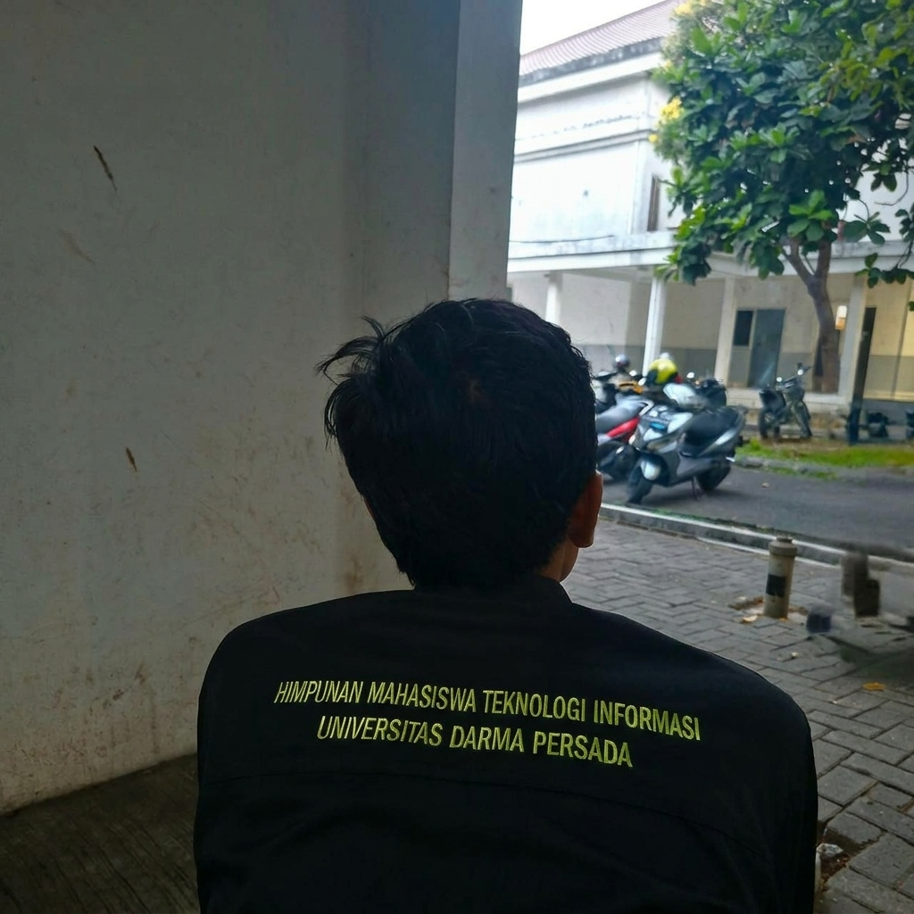
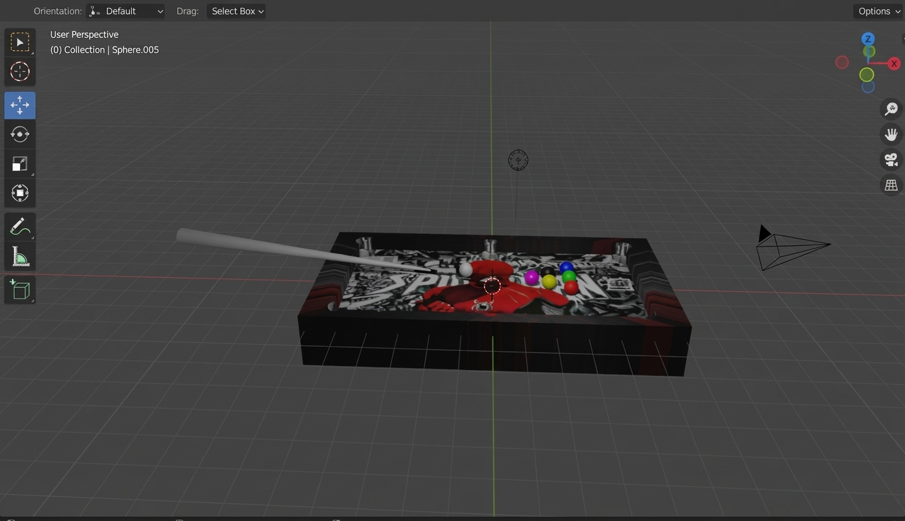

PHP
MySQL
REST API
Available for Projects
ID // 2025230006
Halo, saya Kevin Christopher.
Web Developer & Creative Technologist yang berfokus membangun antarmuka web modern, sistem yang efisien, serta eksplorasi visual interaktif.

Kevin Christopher
Full-Stack & 3D Enthusiast
Tech Stack & Tools
HTML / CSS
JavaScript (ES6+)
Tailwind CSS
PHP & MySQL
Python
C / C++
Blender 3D
Git & Linux
Lokasi
Indonesia
WIB (UTC+7)
Selected Works
Proyek Unggulan
Beberapa proyek pilihan yang pernah saya bangun, mulai dari aplikasi web hingga eksplorasi visual.

Blender 3D
Physics Sim
Cycles
Python
OpenCV
MediaPipe

Tailwind CSS
JavaScript
Pandas
Get In Touch
Tertarik berkolaborasi?
Punya ide proyek menarik atau sekadar ingin berdiskusi seputar teknologi dan desain? Jangan ragu untuk menghubungi saya.